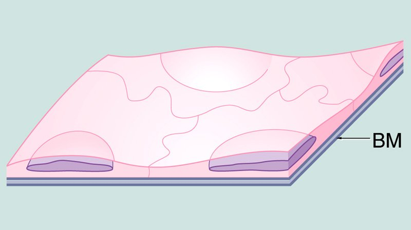
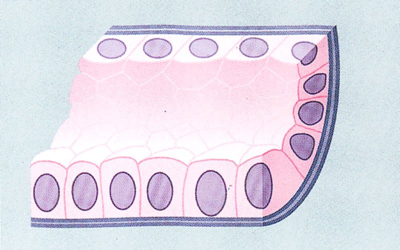
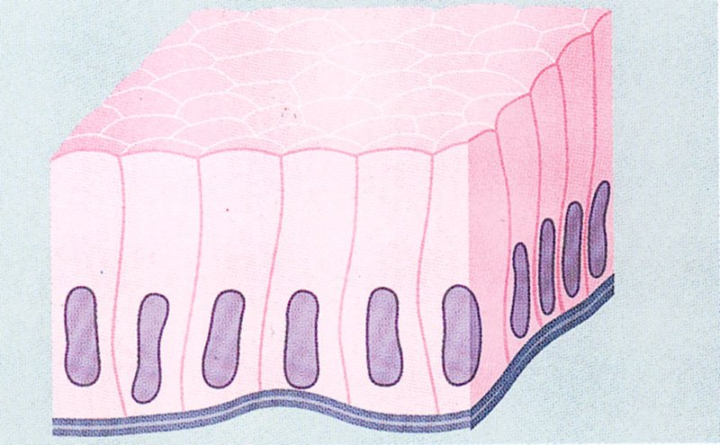
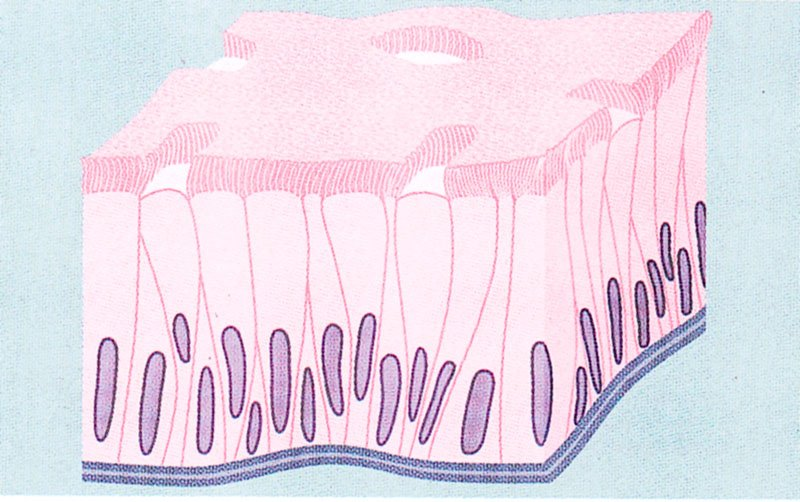
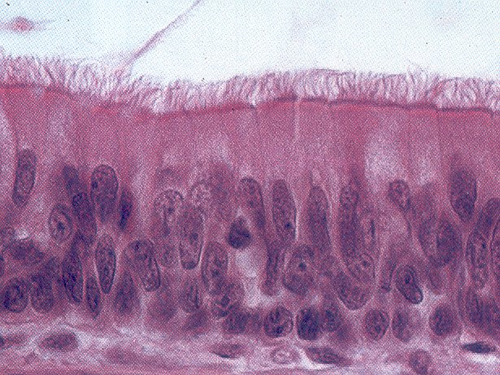
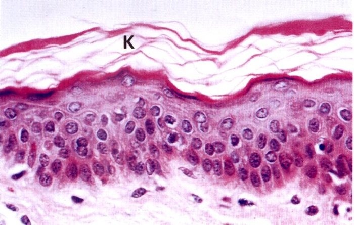
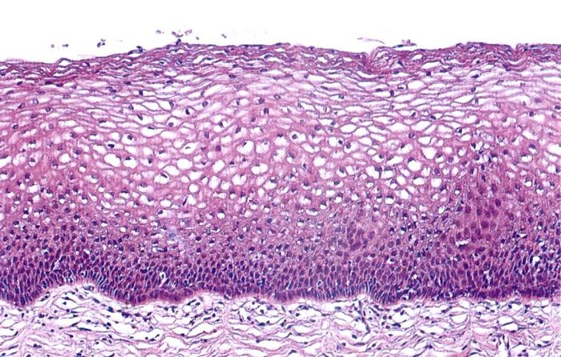
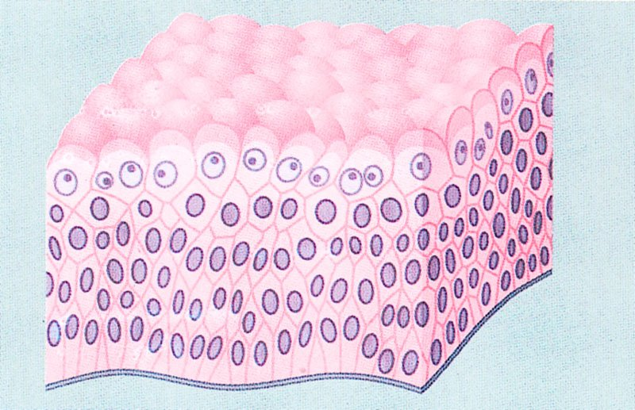

ClinicusMed · Dra. Daisy Rios · Dossiê Clinicus — Padrão de Excelência
El epitelio es un tejido avascular (sin vasos sanguíneos propios) y ricamente inervado, cuya nutrición es indirecta — proviene por difusión desde el tejido conectivo subyacente.
| Función general | Descripción |
|---|---|
| Reviste superficies | Tapiza superficies del cuerpo y reviste cavidades corporales |
| Forma glándulas | Es el tejido de origen de las glándulas exocrinas y endocrinas |
| Crea una barrera | Entre el medio externo y el tejido conjuntivo subyacente |
Las células que integran los epitelios poseen 3 características principales:
| Característica | Descripción |
|---|---|
| Adhesión intercelular | Dispuestas muy cerca unas de otras, unidas por uniones intercelulares especializadas |
| Polaridad morfológica y funcional | 3 regiones distintas: superficie libre (apical), región lateral, región basal |
| Apoyo en membrana basal | La superficie basal se apoya siempre en una membrana basal subyacente |
| Nombre | Localización |
|---|---|
| Mesotelio | Recubre las grandes cavidades internas del organismo |
| Endotelio | Recubre la superficie interna de vasos sanguíneos y linfáticos |
| Urotelio | Recubre la cavidad interna de la vía urinaria |
| Ubicación | Funciones |
|---|---|
| Superficie libre | Protección contra daño mecánico, contra entrada de microorganismos, contra pérdida de agua por evaporación, regulación de la temperatura, importancia sensitiva |
| Superficies internas | Absorción, secreción |
En algunos sitios, el epitelio solo actúa como barrera.
El epitelio se clasifica según 3 criterios diferentes:
| Criterio | Categorías |
|---|---|
| Función | De revestimiento / Glandular |
| Forma/morfología de las células | Plano (escamoso/pavimentoso), Cúbico (prismático), Cilíndrico (columnar) |
| Número de capas | Simple (1 capa), Estratificado (2+ capas), Pseudoestratificado |

Una capa de células planas, achatadas (ahusadas). Núcleo oval y aplanado, en el centro de la célula.

En corte transversal, las células son casi cuadradas. Núcleo esférico, ubicado en el centro.

Células columnares (altas). Núcleos ovalados, más o menos a la misma altura, más cerca de la base.


TODAS las células descansan sobre la membrana basal, pero NO todas llegan hasta la superficie. Las que alcanzan la superficie son cilíndricas (afinadas hacia la base); entre ellas hay células más bajas y anchas contra la membrana basal. El núcleo se ubica en la parte más ancha de cada tipo celular — por eso aparenta tener varias capas ("pseudo"-estratificado), aunque en realidad es 1 sola capa.
5 subtipos principales: Plano estratificado no queratinizado, Plano estratificado queratinizado, Cúbico estratificado, Cilíndrico estratificado, y Epitelio de Transición.

Dos o más capas de células. La capa más cercana a la membrana basal tiene células cúbicas altas o cilíndricas; siguen varias capas de células poliédricas irregulares; al acercarse a la superficie, las células se achatan hasta hacerse escamosas.
Ejemplo: Piel.

En las mucosas interiores, las células superficiales NO pierden los núcleos — se describe como epitelio plano estratificado no córneo o no queratinizado.
Se presenta con poca frecuencia. Ejemplo: conductos excretores de las glándulas sudoríparas (2 capas).
Las capas profundas se asemejan al epitelio plano estratificado, pero las células superficiales tienen forma cilíndrica. Se ve con escasa frecuencia. Ejemplo: conductos excretores de glándulas de gran tamaño.

| Estado | Aspecto |
|---|---|
| Contraído | Muchas capas celulares: basales cúbicas/cilíndricas, capas poliédricas intermedias, capa superficial de células grandes con superficie libre convexa característica ("cúpula") |
| Dilatado | Cuando el órgano hueco está estirado: solo 1-2 capas de células cúbicas bajas, grandes o casi planas |
Ejemplo: vías urinarias (vejiga, uréteres).
O sistema guarda, no seu navegador, quais cards você já sabe bem e quais precisam voltar mais cedo.
Escolhe uma alternativa, depois clica em "Ver comentário completo".